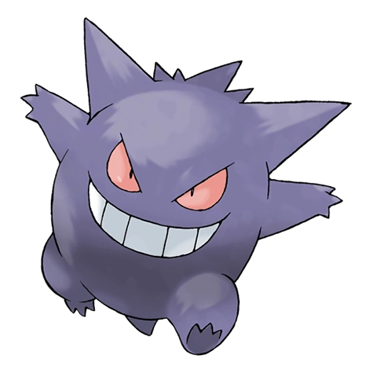

Назад
Генгар

Генгар — Покемон первого поколения под номером 94 в Покедекс. Обитает он в регионе Канто и относится к Призрачному и Ядовитому. Это последняя постоянная стадия превращения Покемона Гастли. Тёмной ночью отбрасываемая фонарями тень может внезапно начать преследовать и настегать прохожего. Это всего лишь пробегающий мимо Генгар, притворяющийся его тенью.
Тип:
Ядовитый
Призрачный
Эволюция
# 094 Генгар
Финальная стадия